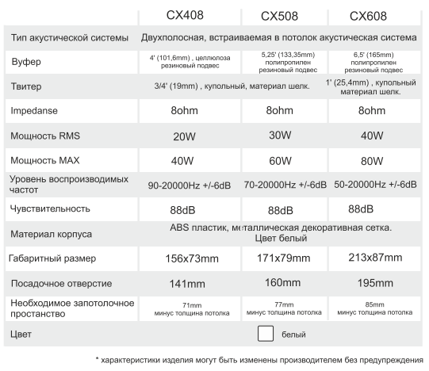
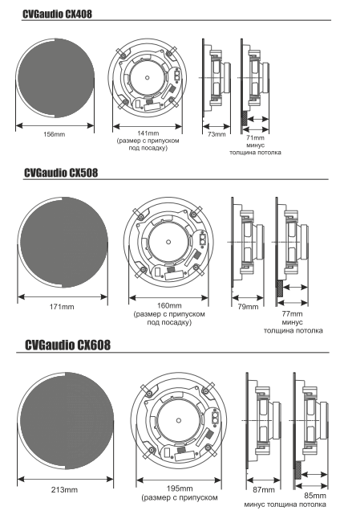

CVGaudio CX408
Оглавление
- Описание
- Установка
- Подключение
- Гарантийные обязательства
- Технические характеристики
- Габаритные размеры и чертеж
В комплект поставки акустической системы входит: - встраиваемая акустическая система CVGaudio СХ4/5/б - декоративная металлическая защитная сетка для внешней установки (безрамочный корпус) - декоративная металлическая защитная сетка для внешней установки (корпус акустической системы с видимым пластиковым кантом) - картонный шаблон для разметки отверстия под установку
Упаковка: В одной внутренней (цветной) коробке поставляется две акустических системы CVGaudio СХ4/5/6. Одна внешняя (одноцветная коробка) содержит восемь акустических систем CVGaudio СХ4/5/6.
Описание
CVGaudio СХ series - двухполосные. встраиваемые в потолок акустические системы Hi-Fi класса. Предназначены в основном для использования в бюджетных системах фонового озвучи вания и мультирум звуковых системах установленных в частных апартаментах, гостиничных номерах, коттеджах, квартирах, офисных кабинетах, небольших переговорных и так далее. Ключевой отличительной особенностью данной серии является наличие в комплекте поставки акустических систем СХ двух вариантов декоративной защитной сетки. Они отличаются тем, что при установке корпус акустики или полностью скрыт абсолютно безрамочной сеткой или при использовании второго варианта - имеет элегантный плГстиковый бортик шириной 1 Омм, В первом варианте сетка держится с помощью надежных неодимовых магнитов, во втором вставляется в специальный паз в корпусе, Благодаря такому универсальному решению акустические системы CVGaudi0 CR можно идеально вписать в лю&й интерьер, не нарушив общий стиль помещения и оставаясь фактически незаметными из-за полного отсутствия пластиковых рамок на декоративной сетке, Серия СХ состоит из трех моделей - 6“, по размеру вуфера . В моделе СХ4О8 4“ вуфер ИЗГОТОВЛен из целулозы, 3,4” твиттер из шелка. Модель СХ5О8 имеет 5“ вуфер из полипропилена и 3/4“ твиттер из шелка. Самая крупная модель данной серии имеет размер вуфера 6” (материал полипропилен) и 1 * шелковый твиттер, CVGaudio Сх4О8 и CR508 в основном рекомендуется использовать в небольших помещениях с не высоким потолком - коридоры, прихожие, санузлы, гардеробные и так далее. CVGaudio СХ608 в силу уже более большого размера вуфера и как следствие большей мощности и более низкочастотного звучания можно использовать в комнатах, гостинных. залах и так далее. Рекомендованная высота потолка - до 4-х (тах - 4,5) метра. Акустические системы серии СХ штатно изготавливаются только белого цвета, но при необходимости как сетка, так и корпус без проблем могут быть окрашены в любой необходимый цвет Импеданс всех моделей серии СХ - 80hm. Мощность (RMS) - 4“ - 20Wl 5'-30W/6“-40W. В целом акустические системы CVGaudi0 серии СХ имеют сбалансированное, комфортное звучание и отлично справятся с созданием приятного музыкального в интерьерах, где не требуется высокая громкость воспроизведения ,
Установка
Акустические системы CVGaudio серии СХ предназначены для установки в подвесной потолок или фальшь-стену толщиной от 8- ми до ЗОмм. Для монтажа необходимо наличие внутренней полости размером не менее: CVGaudio СХ4О8 - min 71 тт CVGaudio СХ5О8 - min 77 тт CVGaudio СХбО8 - 85тт Перед установкой необходимо подготовить отверстие в потолоке или стене. Размер отверстия для разных моделей серии СХ будет различным: CVGaudioCX408-141mm CVGaudio СХ508 - 16Отт CVGaudio сход -195тт К каждой акустической системе прикладывается специальный картонный шаблон для разметки отверстий. Приложите его к месту предполагаемой установки и обведите по контуру карандашом. Далее с помощью пилы необходимо вырезать размеченное отверстие . Спикерный кабель приходящий от усилителя подключается к акустической системе с помощью самозажимного кабельного терминала. Максимальное сечение кабеля которое можно зажать в данном типе терминала - 2х2,5тт. Зачистите 5mm изоляции на каждой жиле приходящего спикерного кабеля . Нажмите на терминал, подпружиненная верхняя часть опустится вниз и откроет отверстие для кабеля поместите в отверстие кабель, отпустите терминал. Подпружиненная часть разъема поднимется вверх и зафиксирует кабель в терминале. Далее проделайте туже процедуру со второй жилой приходящего кабеля. После того, как акустическая система подключена, снимите декоративную металлическую сетку с лицевой стороны корпуса, далее поместите поворотные кронштейны расположенные с задней стороны корпуса в крайнее левое положение С помощью отвертки или шуруповерта закрутите с лицевой стороны крепежные саморезы фиксирующие кронштейн до такой степени , чтобы поворотная часть свободно вращалась, но не имела большого хода по вертикальной оси. После этого поместите корпус в установочное отверстие в потолке. Придерживая одной рукой корпус акустической системы (не держите корпус за твиттер - это может нарушить его позиционирование) затяните саморезы по часовой стрелке. При вращении самореза кронштейн провернется по часовой стрелке и далее начнет опускаться вниз таким образом притягивая лицевую часть корпуса акустической системы к наружней плоскости ПОТОЛКа. Поле того, как корпус будет зафиксирован в установочном отверстии верните ан место декоративную сетку закрывающую диффузор, В комплекте поставки каждой акустической системы серии СХ имеется две декоративных сетки - безрамочная (полностью скрывающая корпус динамика) и второй вариант меньшего размера (при установке этой сетки остается видна рамка корпуса шириной приблизительно 1 Отт
Подключение
Акустические системы серии СХ имеют сопротивление 80hm и работают совместно с низкоомными усилителями. Данные усилителя в зависимости от модели работают С нагрузкой от 4-х до 160hm. Таким образом суммарное сопротивление акустических систем подключенных к каналу усилителя должно быть в пределах корректного для его работы диапазона, Данная информация всегда есть на документации к любому усилителю. Если Вам требуется подключить к каждому из каналов усилителя больше чем по одному динамику, то необходимо использовать последовательное или па аллельное соединение:

При необходимости можно использовать последовательно - параллельное соединение. При подключении акустических систем к усилителю соблюдайте полярность, Плюс на кабельном терминале имеет красную отметку.
Гарантийные обязательства
При условии соблюдения описанных выше правил установки, подключения и эксплуатации на все акустические системы призводства компании CVGaudio предоставляется гарантийный срк бесплатного сервисного обслуживания 2 года. Адрес сервисного центра Вы можете найти на web сайте компании CVGaudi0 - www.cvg.ru, или обратится к региональному дилеру у которого Вы приобрели данное оборудование. Подтверждающим документом для осуществления гарантийных обязательств является накладная на приобретение товара с печатью торговой организации, где Вы приобрели данное изделие.
Технические характеристики

Габаритные размеры и чертеж
